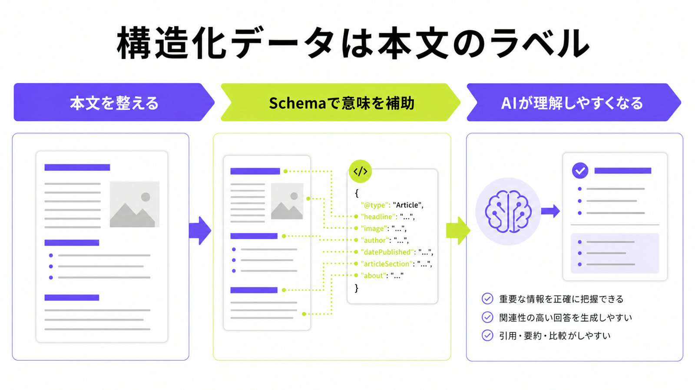
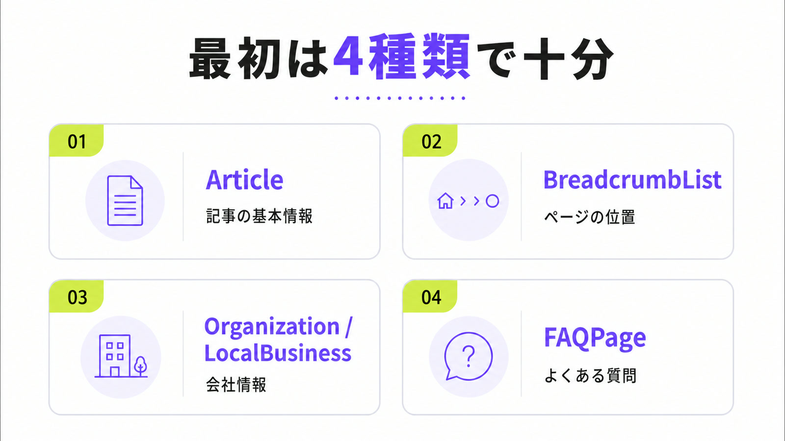
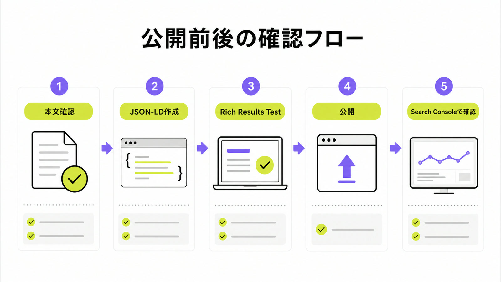

LLMOに構造化データは必要？AIに伝わるSchema・FAQ実装の基本

LLMOに構造化データは必要なのか。結論から言うと、構造化データだけでAI検索に出るわけではありません。ただし、本文、FAQ、会社情報の意味を検索エンジンに伝えやすくする補助としては重要です。
特に中小企業のサイトでは、「会社情報は会社概要にある」「料金はサービスページにある」「よくある質問はFAQにある」とAIや検索エンジンが読み取りやすい状態を作ることが大切です。全体像を先に知りたい方は、LLMO対策とは何かもあわせて確認してください。
この記事では、Googleの公式情報とシート候補の意図に合わせて、Schema.org、FAQPage、Article、BreadcrumbListをどう使えばよいか、WordPressでの最小実装までわかりやすく整理します。
目次

LLMOに構造化データは必要か
構造化データは、ページの中身に「これは記事です」「これは会社名です」「これはFAQです」と名札を付けるための書き方です。人間には普通の文章で読めても、検索エンジンやAIには意味が曖昧なことがあります。その曖昧さを減らすのが構造化データです。
必須ではないが情報整理に役立つ
LLMOで大事なのは、まず本文に正しい情報を出すことです。そのうえで構造化データを入れると、ページの種類、著者、公開日、会社情報、FAQなどを伝えやすくなります。つまり構造化データは、AI検索に出るための魔法ではなく、補助のラベルです。本文が薄いままラベルだけ増やしても、AIが引用したくなる根拠にはなりません。
競合ページでも、Schema.org、FAQ、AIクローラー、内部改善を支援範囲として見せる会社が増えています。ただし、初心者が最初にやるべきことは、難しいタグを大量に入れることではありません。サービス内容、料金、実績、FAQ、会社情報をページ上で読める形にして、その内容に合う構造化データを入れることです。
“Structured data is a standardized format for providing information about a page.”
出典：Google Search Central「Introduction to structured data markup in Google Search」
本文にない情報は入れない
構造化データでよくある失敗は、ページに見えていない情報をJSON-LDだけに入れることです。たとえば、本文には料金がないのに構造化データだけに価格を入れる、画面にはFAQがないのにFAQPageだけ入れる、といった使い方です。Googleも、構造化データはそのページにある内容を説明するものだと示しています。LLMOでも、見える本文と一致させることが基本です。
AIは、ページ本文、内部リンク、会社情報、外部での評判、検索エンジンが読める状態などを総合して回答を作ります。構造化データはその一部です。だから、タグを先に作るより、まずページの文章を読者にもAIにもわかりやすく直し、その後でArticle、FAQPage、Organizationなどを入れる順番が安全です。

LLMOで先に入れたいSchemaの種類
Schema.orgには多くの種類がありますが、最初から全部を覚える必要はありません。AIMAが初心者向けに見るなら、まず記事、パンくず、会社情報、FAQの4つから始めます。
ArticleとBreadcrumbListは記事系の土台
ブログ記事やコラムでは、Articleの構造化データでタイトル、説明文、画像、公開日、更新日、著者、公開元を伝えます。BreadcrumbListは、トップ、ブログ、記事というページの位置を伝えるものです。これらはAI検索だけでなく、通常の検索にも関係します。記事を増やすサイトでは、記事と位置の情報をそろえるだけでも管理しやすくなります。
AIMAの記事でも、ArticleとBreadcrumbListを各記事に入れています。公開日と更新日、OGP、canonical、パンくずがずれると、検索エンジンにも読者にも不親切です。記事制作を外注する場合は、本文だけでなく、こうした周辺情報まで作業範囲に入っているか確認してください。
OrganizationやLocalBusinessで会社情報をそろえる
会社名、所在地、URL、ロゴ、代表者、連絡先、対応エリアなどは、AIに会社を理解してもらうための基本情報です。会社概要ページやトップページにOrganization、店舗や地域ビジネスならLocalBusinessを検討します。ただし、ここでも大切なのは、実際のページ上に同じ情報が見えることです。構造化データは、会社情報の表札として使います。
たとえばBtoB企業なら、会社概要、サービス一覧、料金、事例、FAQ、お問い合わせ導線がつながっているかを見ます。地域店舗なら、住所、営業時間、対応地域、予約方法、写真、口コミへの導線も重要です。AIに自社名を出したい場合は、構造化データだけでなく、会社情報の見せ方そのものを整える必要があります。
“Schema.org provides a collection of shared vocabularies webmasters can use.”
出典：Schema.org「Getting started with schema.org using Microdata」
FAQPageは見えているFAQだけに使う
FAQPageは、ページ上に実際に表示している質問と回答を、検索エンジンに伝えやすくするための構造化データです。LLMOでは、会話型の質問に答えるFAQが役に立ちます。ただし、FAQPageだけを大量に入れても意味はありません。ユーザーがページ上で読める質問と回答にだけ使う、つまり見えているFAQだけに限定するのが安全です。
FAQを作るときは、「LLMOに構造化データは必要？」「WordPressでも実装できる？」「AI検索用の特別なSchemaはある？」のように、読者がそのまま聞きそうな質問にします。回答は最初の一文で結論を出し、理由や注意点を短く続けます。FAQの書き方は、AIO対策のやり方でも詳しく整理しています。

| 種類 | 主な役割 | 最初に見るページ |
|---|---|---|
| Article | 記事タイトル、公開日、著者、画像を伝える | ブログ記事、コラム、事例記事 |
| BreadcrumbList | ページの位置を伝える | 全記事、サービスページ、下層ページ |
| Organization / LocalBusiness | 会社名、所在地、ロゴなどを伝える | トップ、会社概要、店舗ページ |
| FAQPage | 表示中の質問と回答を伝える | FAQが実際にあるページ |
WordPressで始める最小実装手順
WordPressの場合、テーマやSEOプラグインがすでにArticle、BreadcrumbList、Organizationを出していることがあります。まずは今の状態を確認し、足りない部分だけを足すのが現実的です。
プラグインかJSON-LDで小さく始める
WordPressでは、SEOプラグイン、構造化データ用プラグイン、テーマの機能で対応できる場合があります。HTMLを直接触れない会社でも始めやすい一方で、プラグインを重ねると同じ構造化データが二重に出ることがあります。最初は1つの方法に絞り、Article、BreadcrumbList、会社情報、FAQだけを小さく入れてテストするのがおすすめです。
自社で触る場合は、すべてのページに同じFAQを入れない、会社情報を古いままにしない、著者名や更新日を実際の表示と合わせる、といった基本を守ります。制作会社に依頼する場合は、「どのSchemaをどのページに入れるか」「公開後に誰が確認するか」まで決めておくと、入れっぱなしを防げます。
Rich Results TestとSearch Consoleで確認する
構造化データを入れたら、公開前にRich Results Testでエラーを見ます。公開後はSearch ConsoleのURL検査や拡張レポートで、Googleがどう読んでいるかを確認します。ここで大切なのは、エラーがないかだけでなく、ページ本文、title、canonical、公開日、FAQがズレていないかを見ることです。構造化データは、公開前に確認して初めて実務で使えます。
GoogleのArticle構造化データの説明でも、追加、ガイドライン確認、テスト、公開、URL検査という流れが示されています。AIMAのように記事を毎月増やす場合は、記事公開のチェックリストに構造化データ確認を入れると、後から直す手間を減らせます。
“There are no additional technical requirements.”

LLMO実装で失敗しやすいポイント
構造化データは便利ですが、使い方を間違えると効果が見えにくくなります。ここでは、初心者がやりがちな失敗を先に整理します。
AI専用の特別なSchemaを探しすぎない
AI OverviewsやAI Modeに出るための専用Schemaがある、と考えると遠回りになります。GoogleはAI機能に出るための追加技術要件はないと説明しています。大切なのは、通常のSEOの土台、読める本文、クロールできる状態、内部リンク、表示内容と合う構造化データです。まずは特別なSchemaは不要だと考えて、基本を整えましょう。
もちろん、業種によってProduct、LocalBusiness、JobPosting、Eventなどが合うことはあります。ただし、それはAI検索専用ではなく、ページ内容を正しく伝えるためです。ページの目的に合わないSchemaを入れるより、読者に必要な情報を増やし、その情報を正しくラベル付けするほうが安全です。
FAQだけを増やして本文を薄くしない
FAQはAI検索と相性がよい形式ですが、本文の代わりにはなりません。FAQだけを大量に増やすと、ページ全体の流れが読みにくくなり、サービスの強みや根拠が伝わりにくくなります。見出し本文で理由、比較、手順を説明し、最後にFAQで不安を回収する順番が自然です。FAQは、本文を補う場所として使います。
たとえば「構造化データは必要ですか？」というFAQだけでは弱いです。本文で、なぜ必要なのか、何から入れるのか、どう確認するのかを説明したうえで、FAQに短い答えを置きます。AIにも読者にも、結論と根拠がセットで見える状態を目指しましょう。
外部評価や会社情報を放置しない
LLMOでは、自社サイトだけでなく、外部でどう紹介されているかも見られます。会社名、住所、サービス内容、代表者、料金、導入事例が外部サイトと食い違っていると、AIが古い情報を拾う可能性があります。構造化データを入れる前後で、公式サイト、Googleビジネスプロフィール、業界メディア、採用ページなどの情報のズレも確認しましょう。
AIに自社名を出したい場合は、公式サイトの会社情報を整えたうえで、外部掲載の更新、事例の公開、比較されやすいサービス説明の追加が必要です。関連する企業サイト全体の整理は、AI検索に強い企業サイト設計でも解説しています。
AIMAなら記事修正と実装相談までまとめて進められる
構造化データは、記事制作、FAQ設計、サイト改修、Search Console確認がつながって初めて役に立ちます。タグだけを入れて終わると、本文が弱いままになりやすいです。
月5万円で本文・FAQ・構造化データを一緒に見る
AIMAはLLMO特化で、月額5万円、相談回数の上限なし、最低契約期間なしで始められます。記事作成、既存記事の修正、FAQ追加、内部リンク、構造化データの相談まで、支援範囲内でまとめて進められるのが強みです。社内に専門担当者がいなくても、直すところまで伴走します。
まずは無料LLMO診断で、自社サイトがAI検索でどう見られているかを確認してください。構造化データを入れるべきページ、先に本文を直すべきページ、FAQを追加するべきページを分けると、無駄な実装を減らせます。詳しい支援範囲はサービス内容をご覧ください。
LLMOと構造化データに関するよくある質問
LLMOは構造化データだけで改善できますか？
構造化データだけでは足りません。本文、会社情報、FAQ、内部リンク、クロールできる状態を整えたうえで、構造化データを補助として使います。AIに引用されたいなら、まず読者が見ても分かる本文と根拠を用意することが大切です。
中小企業はどのSchemaから入れればいいですか？
最初は4種類から始めるのがおすすめです。ブログ記事ならArticleとBreadcrumbList、会社概要やトップページならOrganizationまたはLocalBusiness、FAQが実際に表示されているページだけFAQPageを検討してください。すべてのSchemaを一気に入れる必要はありません。
WordPressでも構造化データは実装できますか？
WordPressでも可能です。SEOプラグインやテーマ機能で出力できる場合があります。ただし、複数プラグインで重複したり、本文と違う内容が出たりすることがあります。公開前にRich Results Test、公開後にSearch Consoleで確認しましょう。
まとめ
LLMOにおける構造化データは、AI検索に出るための裏技ではありません。本文、FAQ、会社情報、内部リンクを整えたうえで、ページの意味を伝える補助として使うものです。
初心者は、Article、BreadcrumbList、OrganizationまたはLocalBusiness、FAQPageから始めれば十分です。WordPressならプラグインでも対応できますが、ページ上に見える情報と構造化データが一致しているかを必ず確認してください。
AIMAは、LLMO特化、月額5万円、相談回数の上限なし、記事作成・修正込みで、本文整備から構造化データの相談まで支援します。まずは無料LLMO診断またはお問い合わせからご相談ください。